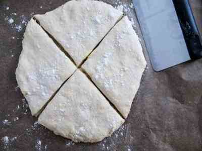

Warm freshly baked scones for breakfast are weekend luxury!


Scones, 4 st /cooking time 25 minutes/
Ingredients:
- 4 dl wheat flour
- 2 tsp baking powder
- 1/2 tsp salt
- 50 g of butter
- 2 dl milk
Do this:
- Set the oven to 250 degrees.
- Mix wheat flour, baking powder and salt in a bowl. Finely distribute the butter into the flour mixture.
- Add milk and quickly stir into a sticky dough.
- Tip out the dough onto a sheet of baking paper. With a little flour on your fingers, press it out into a circle about 30 cm in diameter. Cut the bread into 4 equal parts.
- Bake in the middle of the oven for 10-12 minutes.
Comments: